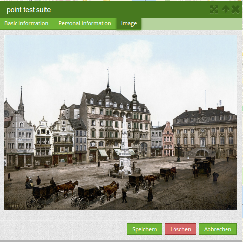

Digitalisierung (Digitizer)¶
Das Digitizer-Element ermöglicht den Aufbau von Erfassungsoberflächen. Derzeit kann über eine YAML-Definition eine Erfassungsmaske für Punkte, Linien oder Flächen aufgebaut werden.
Dabei wird bisher PostgreSQL als Datenquelle unterstützt. Oracle und SpatiaLite sind experimentell verfügbar. Die Entwicklung wurde so durchgeführt, dass die Erfassung auch auf andere Datenquellen wie z.B. OGC WFS erweitert werden kann.
Das Digitizer-Element bietet komplexe Editierfunktionalitäten an:
- Verschieben von Objekten
- Einfügen von Stützpunkten (Linien, Flächen)
- Erfassung von Flächen mit Enklaven und/oder Exklaven sowie Kreisen und Ellipsen
In Zusammenhang mit der Digitalisierung können für die Erfassung von dazugehörigen Sachdaten sehr komplexe Formulare generiert werden.

Folgende Optionen stehen für den Aufbau von Formularen zur Verfügung:
- Definition von mehreren Datenquellen und Geometrieformaten für die Erfassung. Die verschiedenen Quellen werden über eine Auswahlbox angeboten.
- Als Datenquelle wird eine Tabelle angesprochen, wobei auch nur eine Auswahl der Daten über einen Filter herangezogen werden kann
- Textfelder
- Textblöcke (mehrzeilige Textfelder)
- Selectboxen, Multiselectboxen (Füllen der Auswahlbox über eine feste Definition von Werten in der YAML-Definition oder über ein Select auf eine Tabelle)
- Radiobuttons und Checkboxen
- Datumsauswahl
- Dateiupload und Bildanzeige
- Definition von Reitern
- Definition von Trennlinien
- Definition von beschreibenden Texten zur Information
- Pflichtfelder, Definition von regulären Ausdrücken für die Formatvorgabe bestimmter Feldinhalte
- Hilfetexte

Einrichtung¶
Das Element kann nur in der Sidepane eingebettet werden.
{kind=link}
- Title: Titel des Elements. Dieser wird in der Layouts Liste angezeigt und ermöglicht, mehrere Elemente voneinander zu unterscheiden.
- Target: Zielelement (Titel(ID)) der Karte.
- Schemes: YAML-Definition für das Element “digitizer”
Der Digitizer benötigt einen Zugriff auf die Datenbank, in der die zu editierenden Tabellen liegen. Sie müssen dazu einen Datenbankzugriff konfigurieren. Mehr zu diesem Thema finden Sie unter http://doc.mapbender3.org/de/book/database.html
Die Definition des Digitizers wird in einer YAML-Syntax durchgeführt. Hier definieren Sie die Datenbankverbindung, die editierbaren Felder, das Formular für die Anzeige und andere Verhaltensweisen. Bei fehlerhaften Angaben zur Datenbank, Feldern und Formularfehler erscheinen Fehlermeldungen. Über den normalen Aufruf und app.php kommt eine allgemeine Fehlermeldung. Falls Sie den genauen Fehler reproduzieren möchten, sollten Sie die Seite über app_dev.php aufrufen. Hier tauchen ausführliche Fehlermeldungen zum Fehlerverhalten auf.
YAML-Definition für das Element digitizer in der Textarea unter schemes¶
In dem folgenden YAML-Block ist die beispielhafte Definition für drei Erfassungsoberflächen enthalten. Kopieren Sie den folgenden Block in Ihr Digitizer-Element, um die Erfassung von Punkten, Linien und Polygonen zu testen. Vorher müssen Sie die Datenbankverbindung und die drei Demo-Tabellen anlegen. Die SQL-Befehle für das Anlegen der Tabellen finden Sie weiter unten. Der Funktionsumfang der eingebauten Features und weitere Funktionen werden nach diesem Beispielaufbau genauer erläutert.
poi:
label: point digitizing
inlineSearch: true
maxResults: 500
featureType:
connection: search_db
table: poi
uniqueId: gid
geomType: point
geomField: geom
srid: 4326
openFormAfterEdit: true
zoomScaleDenominator: 500
allowEditData: true
allowDelete: true
allowDigitize: true
useContextMenu: true
toolset:
- type: drawPoint
- type: moveFeature
popup:
title: point test suite
width: 500px
searchType: currentExtent
tableFields:
gid: {label: Nr. , width: 20%}
name: {label: Name , width: 80%}
styles:
default:
strokeWidth: 2
strokeColor: '#0e6a9e'
fillColor: '#1289CD'
fillOpacity: 1
fillWidth: 2
pointRadius: 10
select:
strokeWidth: 3
strokeColor: '#0e6a9e'
fillOpacity: 0.7
pointRadius: 10
formItems:
- type: tabs
children:
- type: form
title: Basic information
css: {padding: 10px}
children:
- type: label
title: Welcome to the digitize demo. Try the new Mapbender3 feature!
- type: input
title: Name
mandatory: true
name: name
mandatoryText: Please give a name to the poi.
infoText: "Help: Please give a name to the new object."
- type: input
title: Title
mandatory: false
name: title
mandatoryText: Please give a title to the poi.
- type: textArea
name: abstract
title: Abstract
placeholder: 'please edit this field'
- type: select
title: Type
name: type
options: {A: A, B: B, C: C, D: D, E: E}
- type: breakLine
- type: form
title: Personal information
css: {padding: 10px}
children:
- type: label
title: Please give us some information about yourself.
- type: fieldSet
children:
- type: input
title: Firstname
name: firstname
css: {width: 30%}
- type: input
title: Lastname
name: lastname
css: {width: 30%}
- type: input
title: E-Mail
name: email
css: {width: 40%}
- type: select
multiple: false
title: Interests
name: interests
options: {maps: maps, reading: reading, swimming: swimming, dancing: dancing, beer: beer, flowers: flowers}
- type: date
title: favorite Date
name: date_favorite
placeholder: Please add a date in the following style dd-mm-yy.
dateFormat: dd-mm-yy
value: 01-01-2016
mandatory: true
css: {width: 25%}
- type: breakLine
- type: breakLine
- type: checkbox
name: public
value: true
title: public (this new object is public)
line:
label: line digitizing
inlineSearch: true
maxResults: 1500
featureType:
connection: search_db
table: lines
uniqueId: gid
geomType: line
geomField: geom
srid: 4326
openFormAfterEdit: true
allowDelete: true
useContextMenu: true
toolset:
- type: drawLine
- type: modifyFeature
- type: moveFeature
popup:
title: line test suite
width: 500px
searchType: currentExtent
tableFields:
gid: {label: Nr. , width: 20%}
name: {label: Name , width: 80%}
styles:
default:
strokeWidth: 2
strokeColor: '#0e6a9e'
fillColor: '#1289CD'
fillOpacity: 1
fillWidth: 2
pointRadius: 10
select:
strokeWidth: 3
strokeColor: '#0e6a9e'
fillOpacity: 0.7
pointRadius: 10
formItems:
- type: form
title: Basic information
css: {padding: 10px}
children:
- type: label
title: Welcome to the digitize demo. Try the new Mapbender3 feature!
- type: input
title: Name
name: name
mandatory: true
mandatoryText: Please give a name to the new object.
infoText: "Help: Please give a name to the new object."
- type: select
title: Type
name: type
options: {A: A, B: B, C: C, D: D, E: E}
polygon:
label: polygon digitizing
inlineSearch: true
maxResults: 1500
featureType:
connection: search_db
table: polygons
uniqueId: gid
geomType: polygon
geomField: geom
srid: 4326
openFormAfterEdit: true
allowDelete: false
useContextMenu: true
toolset:
- type: drawPolygon
- type: drawRectangle
- type: drawDonut
- type: drawEllipse
- type: drawCircle
- type: modifyFeature
- type: moveFeature
popup:
title: polygon test suite
width: 500px
searchType: currentExtent
tableFields:
gid: {label: Nr. , width: 20%}
name: {label: Name , width: 80%}
styles:
default:
strokeWidth: 2
strokeColor: '#0e6a9e'
fillColor: '#1289CD'
fillOpacity: 1
fillWidth: 2
pointRadius: 10
select:
strokeWidth: 3
strokeColor: '#0e6a9e'
fillOpacity: 0.7
pointRadius: 10
formItems:
- type: form
title: Basic information
css: {padding: 10px}
children:
- type: label
title: Welcome to the digitize demo. Try the new Mapbender3 feature!
- type: input
title: Name
mandatory: true
name: name
mandatoryText: Please give a name to the new object.
infoText: "Help: Please give a name to the new object."
- type: select
title: Type
name: type
options: {A: A, B: B, C: C, D: D, E: E}
SQL für die Demo-Tabellen¶
Die folgenden SQL-Befehle müssen in Ihrer Datenbank ausgeführt werden. Sie legen drei Demo-Tabellen an, damit mit der oben gezeigte YAML-Definition die einzelnen Funktionen getestet werden können. Die PostGIS Extension muss aktiviert sein.
create table public.poi (
gid serial,
name varchar,
type varchar,
abstract varchar,
public boolean,
date_favorite date,
title varchar,
firstname varchar,
lastname varchar,
email varchar,
interests varchar,
user_name varchar,
group_name varchar,
modification_date date,
my_type varchar,
file_reference varchar,
x float,
y float,
geom geometry(point,4326),
CONSTRAINT pk_poi_gid PRIMARY KEY (gid)
);
create table public.lines (
gid serial,
name varchar,
type varchar,
abstract varchar,
public boolean,
date_favorite date,
title varchar,
firstname varchar,
lastname varchar,
email varchar,
interests varchar,
length float,
category varchar,
user_name varchar,
group_name varchar,
modification_date date,
my_type varchar,
file_reference varchar,
x float,
y float,
geom geometry(linestring,4326),
CONSTRAINT pk_lines_gid PRIMARY KEY (gid)
);
create table public.polygons (
gid serial,
name varchar,
type varchar,
abstract varchar,
public boolean,
date_favorite date,
title varchar,
firstname varchar,
lastname varchar,
email varchar,
interests varchar,
area float,
category varchar,
user_name varchar,
group_name varchar,
modification_date date,
my_type varchar,
file_reference varchar,
x float,
y float,
geom geometry(polygon,4326),
CONSTRAINT pk_polygons_gid PRIMARY KEY (gid)
);
Nutzung¶
Allgemein¶
Der Digitizer ermöglicht das Editieren von FeatureTypes. Diese basieren auf Punkt, Linien oder Polygongeometrien und ihren Sachdaten. Die Sachdaten werden in dem Formular des Digitizers angezeigt. Das Editieren der Geometrien geschieht über die Karte.
Geometrien erstellen¶
Jeder FeatureType kann unterschiedliche Toolsets freischalten, die dann in der Schaltflächenleiste des Digitizers sichtbar sind.
In dem FeatureType “poi” wird mit dem “drawPoint” Toolset beispielsweise die Schaltfläche zum Erstellen eines neuen Punktes freigeschaltet, mit dem Toolset “modifyFeature” die Verschieben-Schaltfläche eingeblendet.

Speichern, Löschen, Abbrechen¶
Es stehen drei Schaltflächen im Dialog zur Verfügung: Speichern, Löschen, Abbrechen.
Das Speichern der Änderungen geschieht erst, wenn die Schaltfläche “Speichern” im Attributdialog gedrückt worden ist. Ein Verschieben einer Geometrie alleine speichert das Feature also nicht sofort (um unnötige Änderungen in der Datenbank zu verhindern). Es ist bislang noch notwendig, den Attributdialog zu öffnen und Speichern zu klicken.

- Speichern: Speichert die Geometrie und die Attributdaten in die Datenbank.
- Löschen: Löscht die Daten.
- Abbrechen: Speichert und löscht die Daten nicht, behält die Geometrie aber für eine weitere Bearbeitung im internen Speicher. Sie ist weiterhin in der Karte zu sehen und kann angepasst werden (z.B. bei Polygonen). Attributdaten werden nicht vorgehalten.
Es gibt mehrere Optionen in den Basisdefinitionen, die das Verhalten bestimmen:
- allowEditData: Speichern Schaltfläche anzeigen.
- allowDelete: Löschen Schaltfläche anzeigen.
- allowCancelButton: Abbrechen Schaltfläche anzeigen.
- allowDeleteByCancelNewGeometry: Verhalten des Abbrechen Knopfes.
Das Löschen eines Features kann sowohl über den Dialog, als auch die Tabelle geschehen.
Vertices¶
Das Bearbeiten von Polygonen und Linien erlaubt das Erstellen, Verschieben und Löschen von Vertices. Die Schaltfläche zum Editieren von Vertices erwartet, dass man ein Polygon selektiert. Dieses wird dann mit den Stützpunkten angezeigt.

Die vorhandenen Stützpunkte werden deckend dargestellt, mögliche neue Stützpunkte befinden sich immer in der Mitte einer Kante, sind leicht transparent dargestellt und können per Klick auf diesen Punkt hinzugefügt werden.
Vorhandene Vertices werden mit der Entfernentaste auf dem Keyboard gelöscht. Dafür bewegt man sich mit dem Mauszeiger über einen Stützpunkt und drückt die Entf-Taste. Anmerkung: Falls das Löschen einen Stützpunktes nicht reagiert, hilft ein Klick mit der rechten Maustaste auf die Karte. Speziell mit dem aktivierten Kontextmenü können sich z.Z. noch Events verhaken.
Konfiguration¶
Im Folgenden werden die einzelnen Bestandteile des Digitizers erklärt, die die Grundstruktur ausmachen und die in dem Formular eingebettet werden können.
Basisdefinition¶
Eine Basisdefinition, hier am Beispiel der poi, sieht folgendermaßen aus:
poi:
label: point digitizing
maxResults: 500
minScale: 5000
featureType:
connection: search_db
table: poi
uniqueId: gid
geomType: point
geomField: geom
srid: 4326
openFormAfterEdit: true
zoomScaleDenominator: 500
allowEditData: true
allowDelete: true
allowDigitize: true
[...]
popup:
[...]
Die möglichen Optionen sind:
- label: Beschriftung mit dem Namen der Erfassungsoberfläche
- maxResults: maximale Trefferanzahl
- minScale: Minimaler Maßstab, ab dem die Features in der Karte angezeigt werden (z.B. minscale: 5000 = Anzeige ab einem Maßstab über 1:5000, beim rauszoomen)
- featureType: Verbindung zur Datenbank
- connection: Name der Datenbank-Verbindung aus der parameters/config.yml
- table: Name der Tabelle, in der das FeatureType gespeichert wird
- uniqueId: Name der Spalte mit dem eindeutigen Identifier
- geomType: Geometrietyp
- geomField: Attributspalte, in der die Geometrie liegt.
- srid: Koordinatensystem im EPSG-Code
- openFormAfterEdit: Nach der Erfassung einer Geometrie öffnet sich das Erfassungsformular. [true/false] Standard ist true.
- zoomScaleDenominator: Zoomstufen, die für das Zoomen auf das Objekt gewählt wird.
- allowEditData: Daten dürfen editiert werden [true/false]. Es erscheint eine Speichern Schaltfläche.
- allowDigitize: Daten dürfen gespeichert werden. [true/false]
- allowDelete: Daten dürfen gelöscht werden. [true/false]. Es erscheint eine Löschen Schaltfläche.
- allowDigitize: Daten dürfen neu erstellt werden. [true/false]. Bei false erscheinen keine Digitalisierungs-Schaltflächen (neuer Punkt, verschieben, etc.).
- useContextMenu: Anzeige des Kontextmenü eines Features. [true/false]
- allowCancelButton: Zeigt die Abbrechen Schaltfläche. [true/false]. Siehe Speichern, Löschen, Abbrechen.
- allowDeleteByCancelNewGeometry: Wenn auf true gestellt: Beim Neuanlegen eines Features verhält sich der Abbrechen Knopf wie der Löschen Knopf: Das Feature wird aus der Karte und der Tabelle entfernt. Dies gilt nicht bei dem Ändern eines vorhandenen Features. [true/false]
- displayOnInactive: Der aktuellen FeatureType wird weiterhin auf der Karte angezeigt, auch wenn der Digitizer in der Sidepane (Accordion, Tabs) nicht mehr aktiviert ist. [true/false]. Die Option ist, wenn angeschaltet, ein wenig tricky, da auch die einzelnen Digitizer Events noch aktiviert sind, für erfahrene Anwendern aber durchaus hilfreich.
Definition Popup¶
popup: # Definition des Formularfensters als PopUp-Fenster. Weitere experimentelle Anpassungsmöglichkeiten unter http://api.jqueryui.com/dialog/
title: POI # Definition des Titels vom Formularfensters
height: 400 # Höhe des Formularfensters
width: 500 # Breite des Formularfensters
#modal: true # Alles außer dem Formularfensters wird ausgegraut und die Position und Größe des Fensters ist für die Dauer der Datenaufnahme fixiert
#position: {at: "left+20px", my: "left top-460px"} #Positionierung des Formularfensters im Browserbereich
Definition der Objekttabelle¶
Der Digitizer stellt eine Objekttabelle bereit. Über diese kann auf die Objekte gezoomt werden und das Bearbeitsformular kann geöffnet werden. Die Objekttabelle ist sortierbar. Die Breite der einzelnen Spalten kann optional in Prozent oder Pixeln angegeben werden.
- tableFields - Definition der Spalten für die Objekttabelle.
- searchType all oder currentExtent
searchType: currentExtent # [currentExtent|all] currentExtent listet alle Objekte im derzeitigen Kartenausschnitt. all listet alle Objekte in der Tabelle. Standard ist currentExtent.
tableFields: # Definition der Spalten für die Objekttabelle
gid: {label: Nr. , width: 20%} # [Tabellenspalte]: {label: [Beschriftung], width: [css-Angabe z.B. Angabe der Breite]} # Definition einer Spalte
name: {label: Name , width: 80%}
Dateireiter (type tabs)¶
Die Formularelemente können in verschiedenen Reitern dargestellt werden. Dazu dient das formItem type “tabs”.
formItems:
- type: tabs # Type tabs erzeugt Reiter im Erfassungsformular
children: # Die Reiter werden als Unterobjekte (children) vom Type form definiert.
- type: form
title: Basic information # Titel des Reiters
css: {padding: 10px}
children: # Durch mehrere Unterobjekte in Gruppen können Angaben im Formular nebeneinander angeordnet werden.
- type: label
title: Welcome to the digitize demo. Try the new Mapbender3 feature!
...
Textfelder (type input)¶
- type: input # Typ Textfeld
title: Title for the field # Beschriftung mit dem Titel des Feldes (optional)
name: column_name # Referenz zur Tabellenspalte
mandatory: true # Angabe ob Pflichtfeld (optional)
mandatoryText: You have to provide information. # Text sofern Pflichtfeld nicht gefüllt ist
infoText: 'Bitte geben Sie einen Wert an' # Definition eines Informationstextes
value: 'default Text' # Definition eines Standard-Wertes (optional)
placeholder: 'please edit this field' # Platzhalter, der vor der Eingabe erscheint (optional)
Auswahlboxen (selectbox oder multiselect [type select])¶
Durch die Definition einer Auswahlbox können vordefinierte Werte im Formular genutzt werden. Hier wird in eine Auswahlbox mit einem wählbaren Eintrag (type select) und einer Auswahlbox mit mehreren auswählbaren Einträgen (type multiselect) unterschieden.
(1) select - ein Eintrag kann ausgewählt werden
- type: select # Typ Auswahlbox
title: select some types # Beschriftung mit dem Titel des Feldes (optional)
name: my_type # Referenz zur Tabellenspalte
multiple: false # Definition einer Mehrfachauswahl (multiselect), Standard ist false
options: # Definition der Optionen (key: value)
1: pub
2: bar
3: pool
4: garden
5: playground
(2) multiselect - mehrere Einträge können ausgewählt werden
Multiselect-Box wird durch das attribute “multiple: true” aktiviert. Es können mehrere Einträge ausgewählt werden. Die Nutzung und die Voraussetzungen der Datenbank können da variieren. Bei dem oben beschriebenen Beispiel können die Interessen in den POI als Multiobjekte abgespeichert werden. Das Datenbankfeld ist weiterhin ein character varying.
-
type: select
multiple: true
title: Interests
name: interests
options:
maps: maps
reading: reading
swimming: swimming
dancing: dancing
beer: beer
flowers: flowers
Das SQL (wenn maps und reading abgespeichert wurden):
gisdb=> select interests from poi where gid=3;
interests
--------------
maps,reading
(1 row)
Beim Abspeichern von Einträgen werden die Schlüsselwörter in der Datenbank abgelegt (Bsp.: “dancing: Tanzen” und “flowers: Blumen” speichert “dancing,flowers”).
- type: select # Typ Auswahlbox
title: Wählen Sie einen Typ aus # Beschriftung mit dem Titel des Feldes (optional)
name: my_type # Referenz zur Tabellenspalte
multiple: true # Definition einer Mehrfachauswahl (multiselect), Standard ist false
options:
a: a # Definition der Optionen (key: value)
b: b
c: c
Füllen der Auswahlboxen über eine SQL Abfrage
Mit einer SQL Abfrage können die Werte direkt aus der Datenbank gezogen werden. Dabei ist zu beachten, dass die key-value zuordnungen wegfallen und nur noch die Indizes abgespeichert werden.
- type: select # Typ Auswahlbox
title: select some types # Beschriftung (optional)
name: my_type # Referenz zu Tabellenspalte
connection: connectionName # Definition einer Datenbankverbindung (connection)
sql: 'SELECT DISTINCT key, value FROM tableName order by value' # Definition SQL, Abfrage der Werte key und value
Texte/Label (type label)¶
- type: label # Typ Label schreibt einen nicht bearbeitbaren Text in das Formularfenster.
title: 'Please give information about the poi.' # Definition eines nicht bearbeitbaren Textes.
Texte (type text)¶
Im Formular können Texte definiert werden. Hierbei kann auf Felder der Datenquelle zugegriffen werden, dazu wird JavaScript verwendet.
- type: text # Typ text zur Generierung von dynamischen Texten aus der Datenbank
title: Name # Beschriftung (optional)
name: name # Referenz zu Tabellenspalte, dessen Inhalt angezeigt werden soll
css: {width: 80%} # CSS Definition (optional)
text: data.gid + ': ' + data.name
# Text Definition in JavaScript
# data - Angabe, dass Datenbankfeld aus der Tabelle angesprochen wird.
# z.B.: data.gid --> Anzeige der ID der Geometrie im Textfeld
Textbereiche (type textArea)¶
Ähnlich zum Textfeld über type input (siehe oben) können hier Textbereiche erzeugt werden, die bei type textArea mehrere Zeilen umfassen können.
- type: textArea # Typ textArea erzeugt einen Textbereich
rows: 4 # Anzahl der Zeilen für den Textbereich, die beim Öffnen des Formulars erscheinen. Feld kann per Maus im Formular größer gezogen werden.
name: beschreibung # Tabellenspalte
title: Bestandsaufnahme Bemerkung # Beschriftung (optional)
Trennlinien (type breakline)¶
- type: breakline # fügt eine einfache Trennlinie ein
Checkboxen (type checkbox)¶
- type: checkbox # Typ checkbox erzeugt eine Checkbox. Beim Aktivieren wird in die Datenbank der angegebene Value (hier 'TRUE') geschrieben.
title: Is this true? # Beschriftung (optional)
name: public # Referenz zu Tabellenspalte
value: true # angegebener Parameter beim Aktivieren der Checkbox wird in DB gespeichert (hier 'TRUE').
Pflichtfelder¶
Die Hinweise für ein Pflichtfeld erscheinen über dem jeweiligen Feldern. Bei einer fehlenden Angabe in einem definierten Pflichtfeld wird dieses rot umrandet und (wenn vorher definiert) erscheinen Hinweise. Das Objekt kann nicht gespeichert werden, wenn Pflichtangaben fehlen.
Hinweis: Bei der Nutzung von mehreren Reitern in dem Formular kann es sein, dass der Erfasser bei einem Pflichtfeld auf einem nicht sichtbaren Reiter eine Angabe falsch setzt und das Abspeichern daher nicht funktioniert. Hier erscheint keine Fehlermeldung außerhalb des Formulars. Der Erfasser muss die Angaben in dem Formular überprüfen (Kennzeichen: rote Umrandung/ Sprechblase mit Hinweis), bevor diese korrekt abgespeichert werden können.
- type: [Angabe zum Feldtyp] # jedes Feld kann zum Pflichtfeld gemacht werden
mandatory: true # true - Das Feld muss gefüllt werden. Ansonsten kann der Datensatz nicht gespeichert werden. Bei der Definition sind auch reguläre Ausdrücke möglich.
mandatorytitle: Pflichtfeld füllen! # Text der im Feld angezeigt wird, wenn das Feld nicht gefüllt wird oder mit einem ungültigen Wert gefüllt wird.
mandatoryText: Bitte eine Zahl eingeben! # Text der in einer Sprechblase über dem Feld angezeigt wird, wenn das Feld beim Speichern nicht gefüllt ist oder mit einem ungültigen Wert gefüllt ist.
mandatory: /^\w+$/gi # Es können auch reguläre Ausdrücke angegeben werden, um die Eingabe zu überprüfen (z.B. Email oder numbers) Weitere Informationen unter: http://wiki.selfhtml.org/wiki/JavaScript/Objekte/RegExp
# Prüfung, ob die Eingabe eine Zahl ist
mandatory: /^[0-9]+$/
mandatoryText: Bitte eine Zahl eingeben!
Datumsauswahl (type date)¶

- type: date # Textfeld, das eine Datumsauswahl bereitstellt
title: favorite Date # Beschriftung (optional)
name: date_favorite # Referenz zu Tabellenspalte
placeholder: Bitte geben Sie das Datum in der folgende Form an dd.mm.yy # Platzhalter für die Datumsauswahl (optional)
dateFormat: dd.mm.yy # Format für die Datumsanzeige, Standardformat dd.mm.yy (16.01.2016). Weitere Beispiele yy/mm/dd (2017/01/16) oder yy-mm-dd (2017-01-16).
value: 01.01.2017 # Startwert für die Datumsauswahl (optional)
Bei der Nutzung einer Spalte mit dem Tabellenformat date wird das angegebene Datum unabhängig von der Angabe dateFormat in dem Format YYYY-MM-DD in die date-Datenbankspalte geschrieben. Fallls der Parameter dateFormat genutzt wird für eine andere Ansicht oder Abspeicherung muss ein Tabellenfeld im Textformat (z.B. date_text varchar) angelegt werden.
Hilfetexten zu den Eingabefeldern (Attribut infoText)¶
Anders als bei Hifetexten zu den Pflichtfeldern kann der Infotext über jedem Feld erscheinen, unabhängig davon, ob dieses ein Pflichtfeld ist oder nicht. Bei der Angabe infotext: [Text] erscheint ein Info-Button über dem jeweiligen Feld. Der Klick auf diesen Button öffnet den angegebenen Informationstext.
- type: [Angabe zum Feldtyp] # jedes Feld kann einen Infotext nutzen
infoText: In dieses Feld dürfen nur Zahlen eingegeben werden # Hinweistext, der angezeigt wird über i-Symbol.
Gruppierungen (type: fieldSet)¶
Elemente können in einer Zeile gruppiert werden, um logische Einheiten zu bilden oder um Platz zu sparen. Hierbei muss ein fieldSet definiert werden. Anschließend können die Elemente der Gruppe unter children angegeben werden. Für jedes Gruppenelement kann eine Breite über CSS angegeben werden, um die Aufteilung der Zeile für die angegebenen Elemente zu kontrollieren.
- type: fieldSet # Gruppierung von Feldern, unabhängig vom Feldtyp
children: # Angabe der Gruppenelemente unter children
- type: input
title: Vorname
name: firstname
css: {width: 30%} # Angabe der Breite des Gruppenelements. Zusammen sollten die Elemente 100% ergeben.
- type: input
title: Nachname
name: lastname
css: {width: 30%}
- type: input
title: E-Mail
name: email
css: {width: 40%}
Dateiupload (type file)¶
Über den Dateiupload können Dateien durch die Angabe in einer Datenbankspalte im Formular verknüpft werden. Dazu werden die hochgeladenen Dateien im Mapbender3 gespeichert und der Pfad in der Spalte vermerkt.
Der Speicherpfad und der Name der abgespeicherten Dateien kann bis jetzt nicht verändert werden. Der Dateiupload speichert immer in das gleiche Verzeichnis und baut sich aus den Parametern:
- Tabellenname
- Spaltenname
- Dateiname
auf.
Das Verzeichnis ist:
- <mapbender>/web/uploads/featureTypes/[tabellenname]/[spaltenname]/[dateiname].png
Die in der Datenbank verlinkte URL ist:
![http://localhost/mapbender/uploads/featureTypes/[tabellenname]/[spaltenname]/[dateiname].png](http://localhost/mapbender/uploads/featureTypes/[tabellenname]/[spaltenname]/[dateiname].png){kind=link}
- type: file # Typ file für das Hochladen von Dateien
title: Dateiupload # Beschriftung (optional)
text: Laden Sie ein Bild hoch. # Informationstext zum Feld (optional)
name: file_reference # Angabe der Datenbankspalte, in die der Speicher-Pfad geschrieben wird
# Experimentelle Parameter:
#accept: image/* # Vorauswahl von Elementen im Image-Format (Fenster für Dateiupload öffnet sich mit Einschränkungsfilter)
# Es können jedoch weiterhin auch andere Dateiformate hochgeladen werden.
Anmerkungen: Es wird momentan noch ein “thumbnail” Verzeichnis angelegt, dass eine kleinere Version der Bilder beinhaltet. Dieses wird in weiteren Entwicklungsphasen noch verändert.
Für die Ansicht von hochgeladenen Bildern kann die Bildanzeige dazugenommen werden.
Bildanzeige (type image)¶
{kind=link}
Für die Ansicht eines Bildes im Formular kann das Bild-Element genutzt werden. Durch die Angabe einer URL in einem Datenbankfeld oder einer URL über den src-Parameter können Bilder angezeigt werden.
Bilder, die durch das Element Dateiupload in einer Tabellenspalte vermerkt sind können somit auch direkt eingebunden und angezeigt werden.
Das Bild lässt sich durch die Angabe von den beiden Parametern src und name angeben.
- src: Url-Pfad oder Dateipfad (kann relativer Pfad sein)
- name: Url-Pfad oder Dateipfad wird aus der Tabellenspalte übernommen (kann kein relativer Pfad sein)
- Anagbe von name und src zusammen: Der Inhalt der Datenbankspalte aus name wird genommen. Falls die Spalte leer ist wird die src-Angabe genutzt.
- type: image # Type image für das Anzeigen von Bildern
name: file_reference # Referenz zur Datenbankspalte. Wenn definiert, wird der Pfad oder die URL in dem Feld ermittelt und "src" Option ersetzt
src: "bundles/mapbendercore/image/logo_mb3.png" # Angabe eines Pfades oder URL zu einem Bild. Falls der relative Pfad genutzt wird muss relative: true stehen.
enlargeImage: true # Bild wird beim Klick auf das Vorschaubild auf Originalgröße/maximale Auflösung vergrößert. Es wird nicht auf die Bildschirmgröße skaliert.
# Experimentelle Angaben zum Styling
imageCss:
width: 100% # Image CSS Style: Skaliert das Vorschaubild in dem Formular, abweichend von der Originalgröße in Prozent.
Achtung: Wenn nur name und nicht name und src angegeben wird, erscheint bei leeren Spalteneinträgen ein Bild aus dem vorherigen Dateneintrag.
Dynamische Pfade (z.B. “bundles/mapbendercore/image/[nr].png” oder ‘bundles/mapbendercore/image/’ + data.image_reference) können nicht angegeben werden.
Eine Möglichkeit das zu Umgehen wäre ein Trigger, der in die Datenbankspalte beim Insert den Pfad und den Inhalt eines Tabellenfeldes als Name zusammenführt.
Definition der zur Verfügung stehenden Werkzeuge (Toolset Type)¶
Werkzeugliste:
- drawPoint - Punkt erstellen
- drawLine - Line erstellen
- drawPolygon - Polygone erstellen
- drawRectangle - Rechteck erstellen
- drawCircle - Circle erstellen
- drawEllipse - Ellipse erstellen
- drawDonut - Donut erstellen oder die bestehende Geometrien editieren
- modifyFeature - einzelne Knotenpunkte bei Geometrien verschieben
- moveFeature - Geometrien verschieben
- selectFeature - Geometrien de-/selektieren (experimentell). Es findet noch keine Interaktion mit der Tabelle statt und die zur Verfügung stehenden Workflows beschränken sich auf das Löschen.
- removeSelected - die selektierten Geometrien löschen (experimentell). Löscht alle in der Karte selektierten Objekte.
- removeAll - Vorsicht: alle Geometrien aus der Tabelle löschen
Definition der für die Erfassung verwendeten Toolset Typen
polygon:
[...]
toolset:
- type: drawPolygon
- type: drawRectangle
- type: drawDonut
- type: removeSelected
Suche in den Tabellen (inline Search)¶
Über die Suche können Begriffe in der Tabelle gesucht werden. Die aktivierte Sucheleiste erscheint über der Tabelle und nach der Eingabe eines Suchbegriffs werden alle Spalten dieser Tabelle durchsucht und deren Ergebnisse angezeigt.
poi:
...
inlineSearch: true # Suche in den Tabellenspalten, Standard ist true
...
Kontextmenü¶
Über das Kontextmenü kann ein Objekt auf der Karte näher betrachtet werden. Nach der Aktivierung kann man über den rechten Mausklick auf einem Objekt ein Kontextmenü öffnen.

Elemente des Kontextmenüs:
- Heranzoomen: Auf den Kartenausschnitt des Objekts zoomen.
- Bearbeiten: Informationen zu dem Objekt verändern. Klick öffnet die Digitalisieroberfläche.
- Löschen: Löscht das ausgewählte Objekt.
Ist die korrespondierende Basisdefinition (allowEditData, allowDelete) nicht definiert, stehen diese auch im Kontextmenü nicht zur Verfügung. In dem oben stehenden Beispiel steht für die Polygone die Löschen-Funktion nicht zur Verfügung.
poi:
...
useContextMenu: true
...
Clustering (experimentell)¶
Über das Clustering können die Objekte auf der Karte zusammengefasst werden. Abhängig von der definerten Distanz und Zoomstufe werden unterschiedlich viele Objekte zusammengeführt.
Durch die Komplexität des Clusterings können sich in zukünftigen Versionen noch Änderungen an der Funktion und der Syntax ergeben, so dass wir dieses Feature bislang als experimentell kennzeichnen. Abhängigkeiten existieren zu der Anzeige der Features für den aktuellen Ausschnitt/den gesamten Bereich und den unterschiedlichen Geometrietypen.

Definition der Clusterelemente:
- scale: Zoomstufe.
- distance: Distanz zwischen einzelne Features in Metern, die zusammengefügt werden.
- disable: Schaltet Clustering für die Zoomstufe ab.
poi:
[...]
clustering:
-
scale: 10000 # Zoomstufe
distance: 60 # Distanz zwischen einzelne Features in Metern, die zusammengefügt werden
-
scale: 2500
distance: 40
-
scale: 1000
distance: 20
-
scale: 500
distance: 1
disable: true # Schaltet Clustering für die Zoomstufe ab
[...]
Events¶
Es gibt mehrere Events, die zu einem Feature zugeordnet werden können, um Attribute vor oder nach der Aktion zu manipulieren.
- onBeforeSave: Event vor dem Speichern von neuen/ veränderten Informationen
- onAfterSave: Event nach dem Speichern von neuen/ veränderten Informationen
- onBeforeUpdate: Event vor der Aktualisierung von veränderten Informationen
- onAfterUpdate: Event nach der Aktualisierung von veränderten Informationen
- onBeforeSearch: Event vor dem Suchen in SearchField des Digitizers
- onAfterSearch: Event nach dem Suchen in SearchField des Digitizers
- onBeforeRemove: Event vor dem Löschen von Daten
- onAfterRemove: Event nach dem Löschen von Daten
Im Unterschied zu den Save-Events arbeiten die Update-Events nur bei einer Aktualisierung der Daten, nicht bei einer Erstellung.
Anmerkung: Die Events sind noch in der Entwicklung und sollten mit Voraussicht eingebunden werden. Die korrekte Abstimmung der Events aufeinander und ihre Abhängigkeiten sind noch nicht vollständig fertiggestellt und können sich in zukünftigen Versionen ändern.
Im folgenden einige Anwendungsbeispiele.
Speichern von Sachdaten in zusätzlichen Attributspalten:
Das folgende Beispiel zeigt, wie Daten beim Speichern in eine zusätzliche Attributspalte geschrieben werde können. Hier geschieht das mit den Spalten “geom” und “geom2”. Beim Speichern sollen die Daten von geom in das Feld geom2 geschrieben werden.
Man kann das Event je nach Anwendungsfall bei onBeforeInsert oder onBeforeUpdate eintragen.
Da zum Zeitpunkt des Editierens die Geometrie noch nicht persistent in der Datenbank ist, kann man auf sie nicht als Feature zugreifen, sondern nur über das jeweilige “item”, eine interne Digitizer Speicherstruktur. Diese “item” orientieren sich am Formular und den dort angegebenen Attributen.
events:
onBeforeInsert: $item['geom2'] = $item['geom'];
onBeforeUpdate: $item['geom2'] = $item['geom'];
Bei dem Event wird der Wert des Feldes “geom2” mit dem Wert des Feldes “geom” überschrieben.
Speichern unterschiedlicher Geometrietypen:
Dieses Szenario kann man zu einem konsturierten Beispiel erweitern, in dem gleichzeitig unterschiedliche Geometrietypen geschrieben werden. Mithilfe von PostGIS können Linien in Punkte interpoliert werden. Im Digitizer kann ein Event genutzt werden, um das richtige SQL Statement abzuschicken.
events:
onBeforeInsert: |
$sql = "SELECT
ST_Line_Interpolate_Point('".$item['geomline']."'::geometry, 1) as geom";
$stmnt = $this->getConnection()->prepare($sql);
$stmnt->execute();
$result = $stmnt->fetchAll();
$item['geompoi'] = $result[0]['geom'];
Hier wird das onBeforeInsert-Event genommen. Der Längsstrich ‘|’ hinter dem Event zeigt einen mehrzeiligen Block an. Dieser Block besteht aus PHP-Code, der ein SQL-Statement weiterleitet. Das SQL Statement ruft die ST_Line_Interpolate_Point Funktion auf und übergibt die Geometrie der gezeichneten Linie. Da diese noch nicht persistent ist, greift man über das “item” auf die Geometrie (geomline). Die restlichen Zeilen bauen das SQL Statement zusammen und schicken es an die im FeatureType angegebene SQL-Connection. In der letzten Zeile wird der resultierende Punkt (geompoi) in die Punktgeometrie geschrieben.
Darstellung (Styles)¶
Über die Angabe eines Styles kann definiert werden, wie die Objekte angezeigt werden. Default definiert dabei die normale Darstellung der Objekte auf der Karte und Select die Darstellung der ausgewählten Objekte.
poi:
...
styles:
default:
strokeWidth: 2
strokeColor: '#0e6a9e'
fillColor: '#1289CD'
fillOpacity: 1
fillWidth: 2
pointRadius: 10
select:
strokeWidth: 3
strokeColor: '#0e6a9e'
fillOpacity: 0.7
pointRadius: 10
...
YAML-Definition für das Element “digitizer” in der Sidepane in der mapbender.yml¶
Dieser Codeabschnitt zeigt, wie das Digitizer Element in eine auf einer YAML-Datei basierende Anwendung eingebaut werden kann.
sidepane:
digitizer:
class: Mapbender\DigitizerBundle\Element\Digitizer
title: Digitalisation
target: map
schemes:
...
Class, Widget & Style¶
- Class: Mapbender\DigitizerBundle\Element\Digitizer
- Widget: mapbender.element.digitizer.js
- Style: sass\element\digitizer.scss